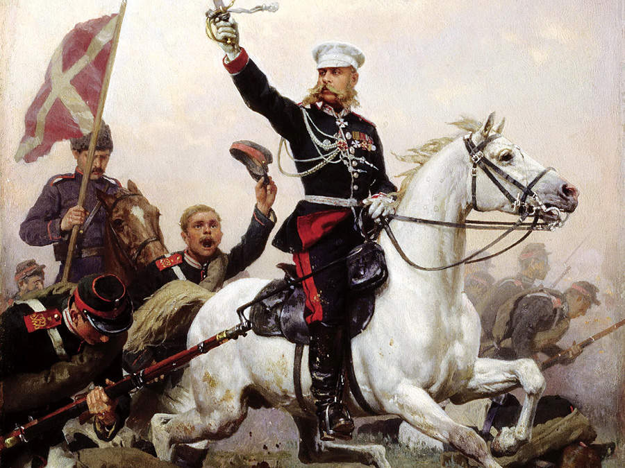

ЛЮДИ
«Белый генерал».
Кто охраняет «Военное кладбище» Минска?
Жизнь «Белого генерала»
В Минске на Батальонной улице некогда проживал герой турецко-русской войны 1877- 78 гг. Героем этим был Скобелев Михаил Дмитриевич. Называли его «Белый генерал» за любовь к военным белоснежным кителям и коням светлых мастей. В свое время он штурмовал Плевну, отбивал на Имилийском перевале атаки, брал Адрианополь, бился в Шейново. Среди русских солдат генерал был очень популярным.
Настоящие легенды ходили о бесстрашии и храбрости Скобелева, о его презрении к опасности и хладнокровии в битвах. Дерзкий, бесстрашный, предприимчивый и смелый в своих решениях – именно таким его запомнили соратники. Не один раз Белый генерал заглядывал смерти в лицо, однако остался живым. Слухи среди солдат говорили, что полководец их заговорен от военных ран, поэтому его ни пуля, ни сабля не могли ранить. Солдаты, сидя у костров, пели:
Удалой боец лихой
Не страшился пулей вражьих,
Не боялся и штыка.
По легенде после того, как был взят Хивин, один из местных водил девять дней и ночей Скобелева по улицам города, не давая ему есть и пить. Только твердил при этом странные и зловещие заклинания. По легенде этот хивинецтак заговорил Скобелева и он стал неуязвимым для пуль, которые якобы теперь стали проходить сквозь него не причиняя вреда. По рассказам до «заговора в Хивине» у Михаила Дмитриевича было семь боевых ранений, после взятия же только одно легкое ранение в ногу.
Рассказывали, что когда-то еще молодой офицер Скобелев увидел сон. Ему привиделся берег Финского залива, куда стали высаживаться англичане вытесняя русских. На выручку им тогда во главе кавалерии приехал Скобелев на белом коне, и неприятель оказался разгромлен. Как оказалось, сон был вещий. Уже утром Михаил Дмитриевич после караула отправился на прогулку. Как же он удивился, когда увидел возле деревушки Малой Бронной того самого коня из его сна. Будучи суеверным, офицер подумал, что тут добрый знак, и на время учений решил поселиться в избе Никиты – хозяина коня. Скобелев все лето проездил на этом коне верхом, за животным ухаживал крестьянин Никита, которому молодой офицер выплачивал жалование.
Смерть Михаила Дмитриевича
Прервалась жизнь «Белого генерала» лет в 39 трагически. …Смерть пришла к герою внезапно, в расцвете его сил. Произошло это 25 июня 1882 года в Москве при весьма загадочных обстоятельствах, породивших целый клубок слухов и легенд, не выясненных до сих пор.
«Обстоятельства его смерти таковы, что тут конца нет вопросительным знакам», — писал В. И. Немирович-Данченко. Он же высказал на этот счет обоснованные предположения: «Нужно сказать правду — иностранцы ценили покойного гораздо лучше, чем мы. Когда прошел первый восторг, вызванный смертью Скобелева, они сейчас же отвели ему надлежащее место, причислив Михаила Дмитриевича к первым полководцам последнего времени. Военные журналы дали добросовестную оценку «врагу Германии», а один авторитет прусской военной науки прямо заявил, что смерть Скобелева равняется для немцев выигранной кампании».
Похороны генерала стали истинно народными. Их подробное описание В. И. Немировичем-Данченко и сегодня, спустя 130 лет, потрясает. Среди многих торжественных слов в адрес покойного трогательно прозвучали и такие: «За любовь его к народу, за любовь народа к нему, за наши слезы, ради собственной Твоей бесконечной благости прости ему, Господи!».
Минчане в начале 20 века рассказывали легенду о том, что на Военном кладбище иногда можно увидеть призрак этого «Белого генерала», который приходит навестить погребенных здесь соратников. В пяти минутах ходьбы от проспекта Независимости, возле кинотеатра Мир, стоит только завернуть на военное кладбище и там можно увидеть храм в ретроспективно-русском стиле, в народе именуемое "Военне кладбище".
В 1941 году 24 июня при бомбардировке немецкой авиацией столицы одна из бомб угодила прямо в храм, упала перед алтарем… и не взорвалась. Главный купол был снесен волной, также загорелась кровля, однако огонь быстро потух. В самом начале июля 1944 храм стал местом для спасения местных жителей, которые не хотели быть угнанными немецкими солдатами. В подвале Свято-Александро-Невского храма люди нашли убежище, и до сих пор прихожане верят, что оберегала испуганных людей в те дни сама Божья милость.